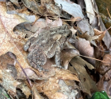
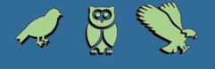

Interested in learning more about Maryland's reptiles and amphibians?
First lets go over the definitions of what reptiles and amphibians are...
According to National Geographic, Reptiles are cold-blooded vertebrates. (Vertebrates have backbones.) They have dry skin covered with scales or bony plates and usually lay soft-shelled eggs.Amphibians are cold-blooded vertebrates (vertebrates have backbones) that don’t have scales. They live part of their lives in water and part on land.
Reptiles and amphibians are collectively called herps (from herpetology , the study of amphibians and reptiles). Think you've seen one? Click the button below to see the common Herps in Maryland

Welcome to the app built for the future environmentalists!
An environmentalist is someone who cares about and advocates for the environment - A solid understanding of your surrounding environment (including wildlife) will make you a better advocate. This application will help you learn more about Maryland's by providing field guides to identify species, allowing you to view real-time animal sightings, and even contribute to scientific research by adding your own sightings!.
Let's Practice.. Do you know what animal is caputed in the image below?
Try and find out! Here's a hint, the reptiles and amphibians panel may be helpful
Below are some helpful links to external pages
Interested in learning more about Maryland's Mammals?
First lets go over the definitions of what a mammal is...
Mammals are animals that are warm-blooded vertebrates (vertebrates have backbones) with hair. They feed their young with milk and have a more well-developed brain than other types of animals Did you know humans are mammals??
Fun Fact: Some mammals can fly... Did you know bats are also mammals? Maryland is home to 10 species of bats
Think you've seen one or another mammal? Click the button below to see the common mammals in Maryland

Interested in learning more about Maryland's birds?
Birds are warm-blooded, air-breathing vertebrates. Their body is covered with feathers. They have beaks, wings and scale covered legs.
There are over 450 bird species have been documented in Maryland, and over half of these species have nested in the State. If you want to learn more about Maryland's bird population, click here. Otherwise use the field guide below to help you identify the common feeder birds in the state.
